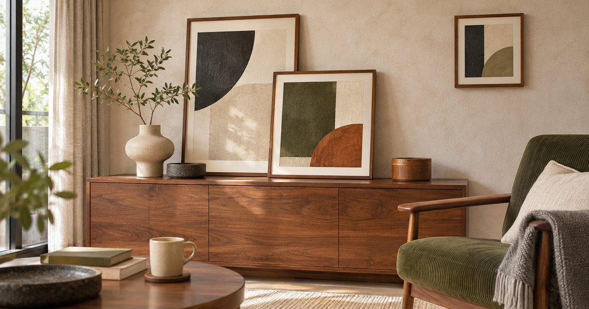

賃貸でもできる壁の飾り方。ポスター・棚・フックの取り入れ方

※この記事にはアフィリエイトリンクが含まれています（広告について）。
家具を整えても、なんとなく部屋が寂しく見える……。そんなときは壁に目を向けてみましょう。賃貸でも、壁を大きく傷つけずに飾る方法はたくさんあります。
アートやポスターを飾る
一番手軽なのが、フレームに入れたポスターやアートを飾る方法です。石こうボード用の細いピンで取り付けるフックなら、壁に残る穴が目立ちにくく、賃貸でも取り入れやすいです（念のため契約内容は確認しましょう）。
飾るときのコツ
- フレームの中心が、目線の高さ（床から約145〜150cm）にくるようにすると落ち着いて見える
- ソファやデスクの上に飾るなら、家具の幅の3分の2程度の大きさがバランスの目安
- 複数飾るなら、フレームの色をそろえると統一感が出る
立てかけて飾る
壁に穴をあけたくない場合は、棚の上や床に大きめのフレームを立てかけるだけでも雰囲気が出ます。季節や気分で気軽に入れ替えられるのもメリットです。
壁に付けられる棚
ピンで取り付けるタイプの小さな飾り棚を使えば、本や小物、グリーンを壁に飾れます。床に物を置かずに済むので、部屋も広く使えます。
ディアウォールなどで柱を立てる
床と天井の間に突っ張って柱を立てるアイテムを使えば、壁に穴をあけずに棚やフックを付けられます。本格的な壁面収納を作りたい人におすすめです。
条件別に選んだ3点
記事の「ポスター」「フック」「棚」をそれぞれ取り入れやすいものを選びました。賃貸の場合は、取り付ける前に契約内容を確認してください。仕様は2026年11月17日にAmazonの販売ページで確認した内容です。編集部が実際に使用したレビューではありません。購入前に最新の情報をご確認ください。
| 商品 | 種類 | サイズ | 耐荷重（販売ページ記載） |
|---|---|---|---|
| ソフケン アルミ額縁 スリムエイト A2 002269 | 額縁 | A2 | — |
| 八番屋 石膏ボード用 Jフック 12個入り | フック | 12個 | 7kg（フック小） |
| ドウシシャ ピンで取り付けるウォールシェルフ L型 幅30 | 飾り棚 | 幅30×奥行11cm | 約3kg |
ポスター
ソフケン アルミ額縁 スリムエイト A2 002269（ブラック）
- 品番
- 002269
- 対応サイズ
- A2（420×594mm）
- 外形
- 424×598mm・厚さ20mm
- フレーム幅
- 8mm
- 素材
- アルミ（アルマイト仕上げ）
- 特徴
- フレーム幅8mmの細いアルミ額縁。ポスターの印象をじゃませず、部屋になじむ。
- 向いている人
- お気に入りのポスターを、すっきりした額に入れて飾りたい人
- 注意点
- A2サイズ専用です。ポスターのサイズを確認してから選んでください。
- 価格
- 価格・在庫は変動するため掲載していません（販売ページの確認日：2026年11月17日）。
フック
八番屋 石膏ボード用 Jフック 12個入り（ホワイト・フック小）
- 入数
- 12個
- リンク先の種類
- フック小（耐荷重7kg）
- 対応
- 石膏ボードの壁
- 特長
- 細いピンで穴が目立ちにくい（販売ページ記載）
- 特徴
- 細いピンで石膏ボードに留めるフック。額縁や帽子、鍵を掛けられる。
- 向いている人
- 壁に大きな穴をあけずに、物を掛ける場所を作りたい人
- 注意点
- 石膏ボード以外の壁（コンクリート・合板など）には使えません。耐荷重は壁の状態によって変わります。
- 価格
- 価格・在庫は変動するため掲載していません（販売ページの確認日：2026年11月17日）。
棚
ドウシシャ ピンで取り付けるウォールシェルフ L型 幅30（ナチュラル）
- サイズ
- 幅30×奥行11×高さ10cm
- 重さ
- 約0.64kg
- 均等耐荷重
- 約3kg
- 取り付け
- ピン（石膏ボード用）
- 特徴
- ピンで留める小さな飾り棚。本や小物、グリーンを1つ置ける。
- 向いている人
- 床や棚の上ではなく、壁に小物を飾るスペースを作りたい人
- 注意点
- 耐荷重は約3kgです。重い物や落ちると危ない物は置かないでください。
- 価格
- 価格・在庫は変動するため掲載していません（販売ページの確認日：2026年11月17日）。
まとめ
まずはお気に入りのポスターを1枚、目線の高さに飾ってみてください。壁に1つアクセントがあるだけで、部屋の印象はぐっと変わります。
この記事に関連するアイテムを探す
Amazonの検索結果ページに移動します。条件に合う商品を比較してお選びください。
- ポスターフレームAmazonで商品を探す
- 石こうボード用フックAmazonで商品を探す
- 壁に付けられる飾り棚Amazonで商品を探す
価格・在庫・仕様は変わることがあります。購入前にAmazonの商品ページで最新の情報をご確認ください。